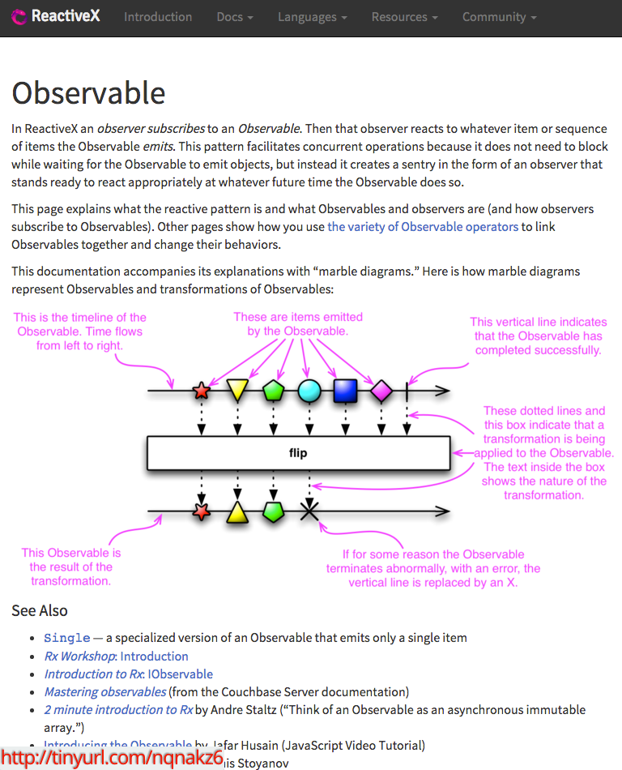
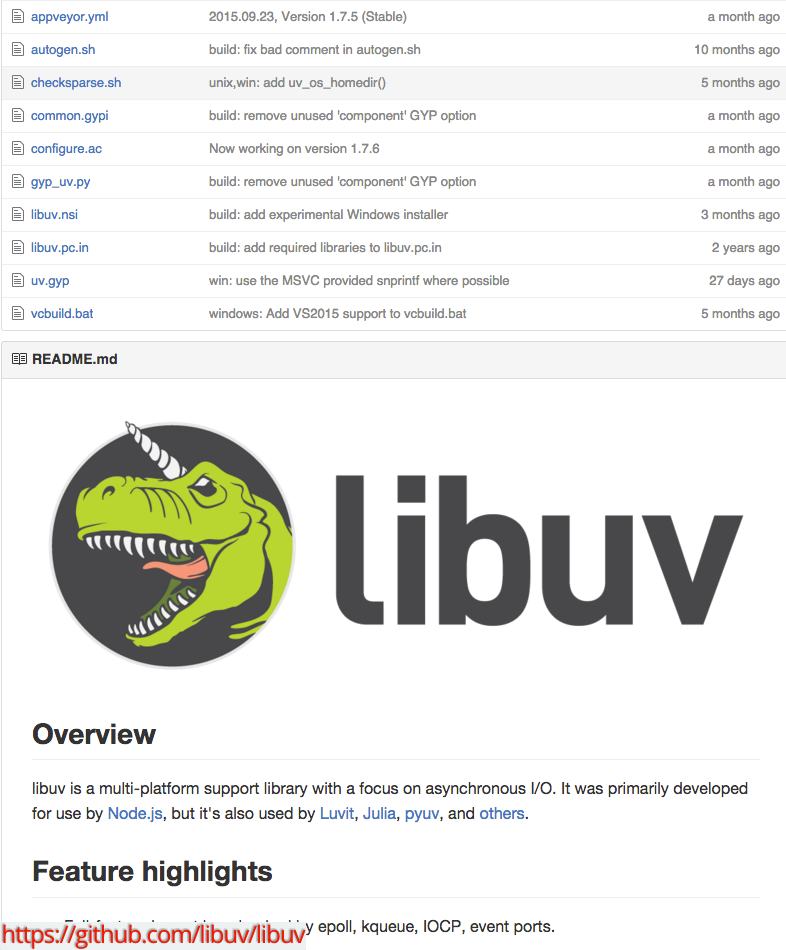
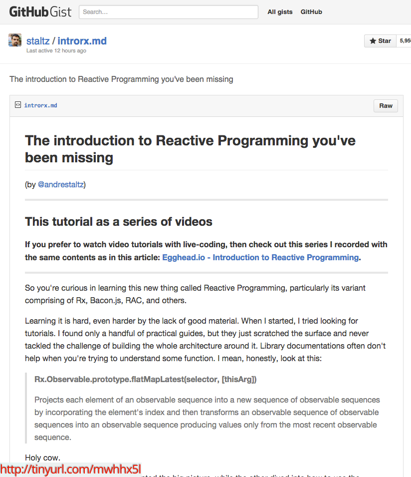
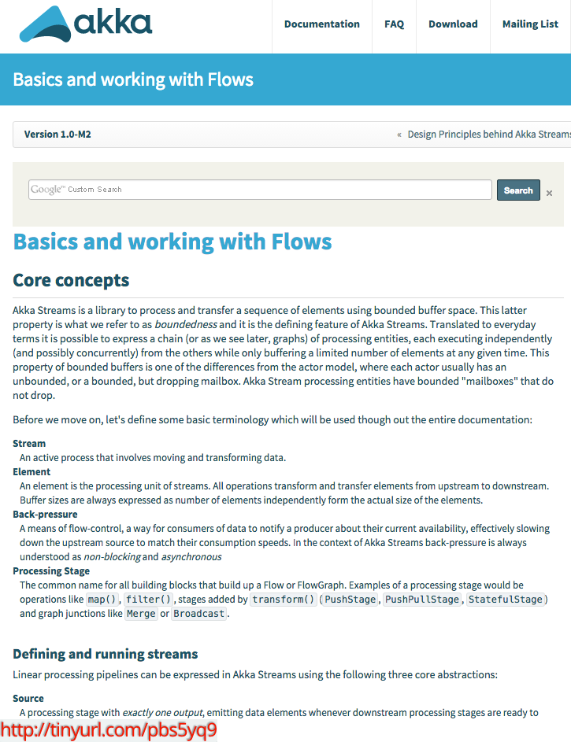

Your browser doesn't support the features required by impress.js, so you are presented with a simplified version of this presentation.
For the best experience please use the latest Chrome, Safari or Firefox browser.
Reactive Programming Principles
 Is not what this talk is about
Is not what this talk is about
What is Reactive Programming?
- Wikipedia: too generic and theoretical
- Stackoverflow: canonical & not suitable for beginners
- Reactive Manifesto: something you would give to managers or business people
Reactive programming is programming with asynchronous data streams
(Nothing new, event buses or your typical click events are event streams.)
Abstractions for handling concurrent asynchronous processing within a system
[8, 3, 1, 6, 4, 7, 10, 14, 13]
Main principles of Reactive Programming
Main principles of Reactive Programming
- Message driven
- Asynchronous
- Non-blocking IO
- and Back Pressure
Main principles of Reactive Programming
Main principles of Reactive Programming

Main principles of Reactive Programming


Main principles of Reactive Programming

Reactive Programming raises the level of abstraction of your code so
you can focus on the interdependence of events that define the business
logic, rather than having to constantly fiddle with a large amount of
implementation details.
THANK YOU